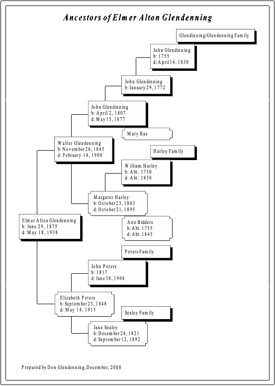
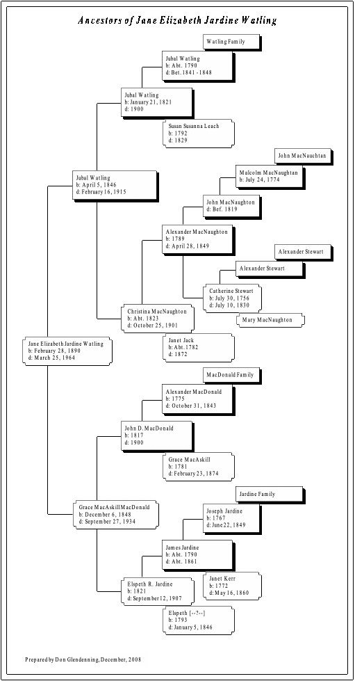

The Family Chronicle
No. 199 November 7, 2010
____________________________________________________________________
On these pages is my complete ancestor tree, complete at least, as I now know it. Because of the length, I was unable to show a complete chart on one page. Instead, I printed my mother’s and father’s ancestry charts separately; mine is the combination of the two. The bad news is that, if any ancestor on either chart is an ancestor of yours, then we are related.

